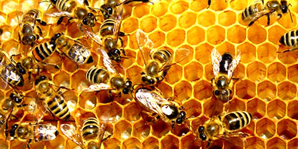
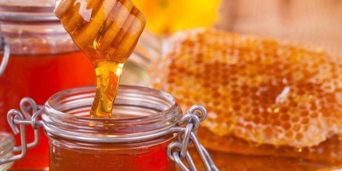

Lebah Madu

Lebah merupakan sekelompok besar serangga yang dikenal karena hidupnya berkelompok meskipun sebenarnya tidak semua lebah bersifat demikian. Semua lebah masuk dalam suku atau familia Apoidae (ordo Hymenoptera: serangga bersayap selaput). Di dunia terdapat kira-kira 20.000 spesies lebah dan dapat ditemukan di setiap benua, kecuali Antartika.
Sebagai serangga, ia mempunyai pasangan kaki dan dua pasang sayap. Lebah membuat sarangnya di atas bukit, di pohon kayu dan pada atap rumah. Sarangnya dibangun dari propolis (perekat dari getah pohon) dan malam yang diproduksi oleh kelenjar lebah betina yang masih muda terdapat dalam badannya. Lebah memakan nektar bunga dan serbuk sari.
Jenis Lebah Madu
Sejak dibukanya Jalan Tol Cipularang, kota Bandung telah menjadi tujuan utama dalam menikmati liburan akhir
pekan
terutama dari masyarakat yang berasal dari Jakarta sekitarnya. Selain menjadi kota wisata belanja,
kota Bandung juga dikenal dengan sejumlah besar bangunan lama berarsitektur peninggalan Belanda.
Apis Koschevnikovi atau Lebah Madu Merah
Lebah Madu Merah merupakan lebah madu yang mendiami Malaysia dan Indonesia (jawa, Sumatera dan Kalimantan).
Namun diyakini jenis ini sudah tidak ditemukan lagi di Pulau Jawa.
Apis Mellifera

Jenis lebah ini adalah favorit para peternak lebah. produksinya sangat tinggi dimana satu kolono
bisa mencapai 35-40 kg per tahun. Lebah ini memiliki daya adaptasi yang baik terhadap berbagai jenis iklim.
Hingga kini terdapat beberapa sub jenis Apis mellifera yang populer untuk diternakkan,
seperti: Apis mellifera mellifera; Apis mellifera lingustica; Apis mellifera carnica; Apis mellifera caucasia;
dan Apis mellifera lehzen.
Apis Dorsata atau Lebah Madu Raksasa
Lebah madu jenis Apis Dorsata merupakan lebah asli dari Asia Tenggara dan Selatan. Banyak tersebar di Indonesia,
Malaysia, Filipina, India dan Nepal. Di Indonesia lebah ini lebih dikenal dengan nama Tawon Gung (Jawa),
Odeng (Sunda) dan tersebar di seluruh hutan kecuali Papua.
Lebah ini masih belum dapat dibudidayakan dikarenakan sifatnya yang ganas dan masih hidup secara liar,
ukuran tubuhnya pun lebih besar dibanding jenis lain. Sengatan lebah ini berbahaya dan dapat menyebabkan
kematian. produksi madunya juga diambil langsung dari hutan.
Manfaat Madu

Dalam berbagai budaya selama berabad-abad, madu telah digunakan dalam banyak keperluan pengobatan.
Salah satu yang paling dikenal adalah penggunaan madu dalam pengobatan Ayurveda sela sebagai obat pencernaan dan ketidakseimbangan pada tubuh.
Orang dapat menggunakan madu sebagai pemanis untuk minum teh di sore hari atau sebagai bahan masker wajah. Tak hanya itu, madu aman dikonsumsi setiap hari dan memiliki manfaat besar bagi tubuh.
- Energy booster
Merangkum dari Healthline, satu sendok makan madu mengandung 64 kalori dan 17 gram gula termasuk fruktosa, glukosa, maltosa, dan sukrosa.
Kandungan tersebut membuat madu menjadi sumber energi yang baik. Glukosa dalam madu dapat diserap oleh tubuh dengan cepat dan memberikan dorongan energi langsung.
Sementara itu, fruktosa memberikan energi berkelanjutan karena diserap lebih lambat. Madu juga berperan menjaga kadar gula darah cukup konstan dibandingkan dengan jenis gula lainnya.
- Mengobati batuk
Sebuah studi tahun 2012 yang terbit dalam Journal Pediatrics menemukan bahwa konsumsi dua sendok teh madu bisa membantu menyembuhkan batuk yang membandel.
Hal ini diketahui karena sifat anti-mikroba dalam madu yang bisa membunuh bakteri tertentu.
- Baik untuk jantung
Madu diketahui dapat membantu pembesaran arteri di jantung sehingga meningkatkan aliran darah ke jantung. Di samping itu, madu juga dapat mencegah pembentukan gumpalan darah yang bisa menyebabkan serangan jantung dan stroke.
Dan masih banyak lainnya.